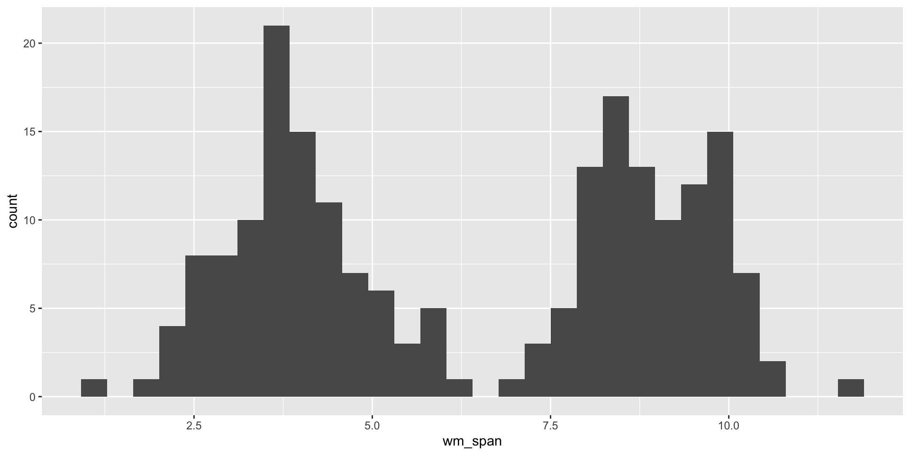
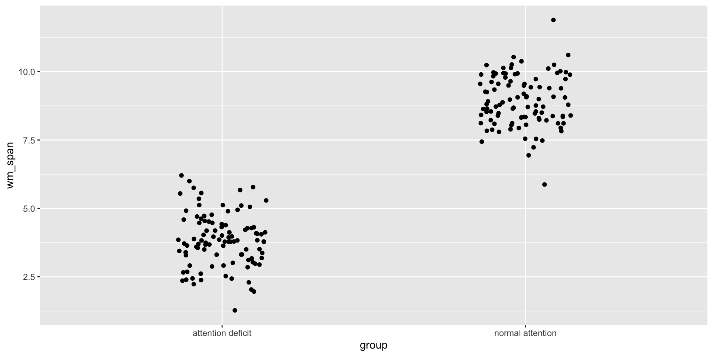
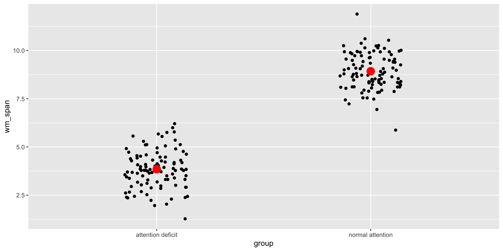
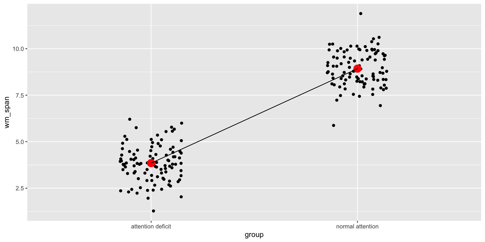
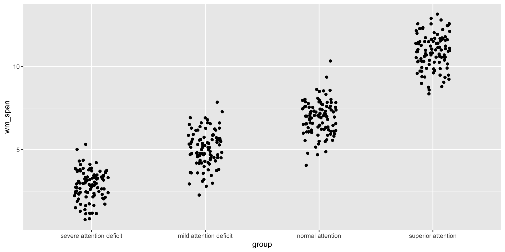
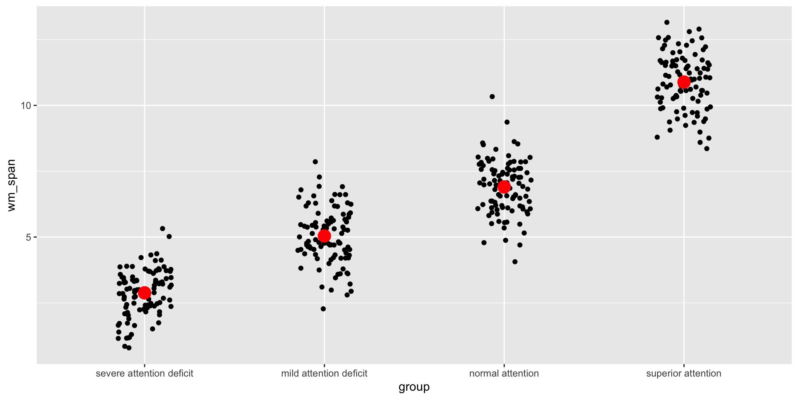
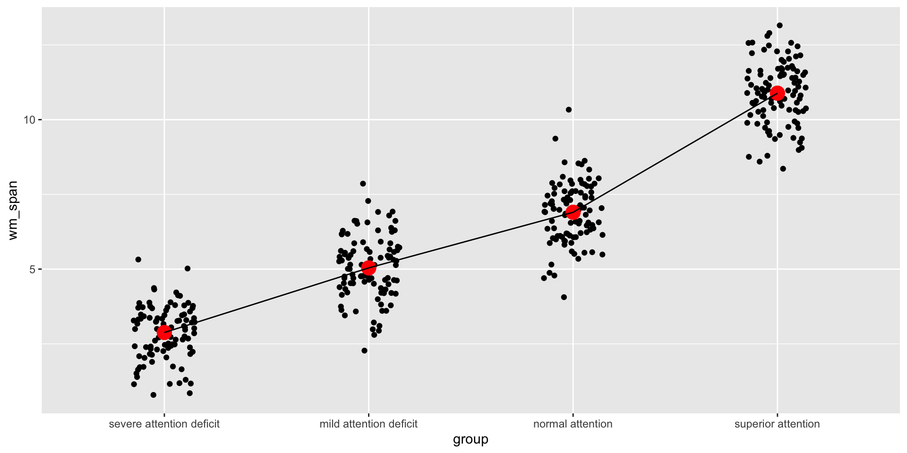

Call:
lm(formula = wm_span ~ group, data = data_2_groups)
Residuals:
Min 1Q Median 3Q Max
-3.05401 -0.61080 -0.05727 0.63912 2.96147
Coefficients:
Estimate Std. Error t value Pr(>|t|)
(Intercept) 3.84779 0.09567 40.22 <2e-16 ***
groupnormal attention 5.08010 0.13530 37.55 <2e-16 ***
---
Signif. codes: 0 '***' 0.001 '**' 0.01 '*' 0.05 '.' 0.1 ' ' 1
Residual standard error: 0.9567 on 198 degrees of freedom
Multiple R-squared: 0.8769, Adjusted R-squared: 0.8762
F-statistic: 1410 on 1 and 198 DF, p-value: < 2.2e-16General Linear Model (GLM)
Mario E. Bermonti-Pérez, MA, PhD
Objectives
- Understand the basic concepts of the GLM
- Understand the usefulness of the GLM
- Understand how the GLM underlies most stats methods
- Understand the basic process of applying the GLM
GLM basics
Form
Examples
- Attention -> WM
- Art -> Sustained attention
- ADHD -> Innatention
- Celiac disease -> Processing speed
- Intervention -> Selective attention
- Musical training -> EF
Form
ùëÇùë¢ùë°ùëêùëúùëöùëí = (ùëÉùëüùëíùëëùëñùëêùë°ùëúùëü)
ùëÇùë¢ùë°ùëêùëúùëöùëí = (ùëÉùëüùëíùëëùëñùëêùë°ùëúùëü) + error
Y =(ùõΩ) + ùúÄ
Y = (ùõΩ0 + ùõΩ1) + ùúÄ
Y = (ùõΩ0 + ùõΩ1 + ùõΩ2) + ùúÄ
Study effects
- Relationship
- Difference between groups
Usefulness
- Existence: statistical significance
- Size: effect size, parameter
GLM with different variables
Lets see the variables
Phonological loop span
Ready?
8
4
0
3
7
1
2
Numbers?
Selective attention
Ready?
Go
Back to GLM with different variables
First, there were data
Differences between 2 groups?
Process
Group by attentional level
Estimate mean
Estimate relationship (difference)
GLM form
GLM analysis
A step further…
Differences between 4 groups
Process
Group by attentional level
Estimate mean
Estimate relationship (difference)
GLM form
GLM form 2 vs 4 groups
GLM analysis
Call:
lm(formula = wm_span ~ group, data = data_4_groups)
Residuals:
Min 1Q Median 3Q Max
-2.8404 -0.6449 0.0835 0.6479 3.4329
Coefficients:
Estimate Std. Error t value Pr(>|t|)
(Intercept) 2.8786 0.1005 28.64 <2e-16 ***
groupmild attention deficit 2.1620 0.1421 15.21 <2e-16 ***
groupnormal attention 4.0229 0.1421 28.30 <2e-16 ***
groupsuperior attention 8.0070 0.1421 56.33 <2e-16 ***
---
Signif. codes: 0 '***' 0.001 '**' 0.01 '*' 0.05 '.' 0.1 ' ' 1
Residual standard error: 1.005 on 396 degrees of freedom
Multiple R-squared: 0.8964, Adjusted R-squared: 0.8956
F-statistic: 1142 on 3 and 396 DF, p-value: < 2.2e-16A step further…
Numeric predictors
Attention and WM
Estimate relationship
Estimate relationship line
GLM form

GLM analysis
Call:
lm(formula = wm ~ attention, data = data_cont_vars)
Residuals:
Min 1Q Median 3Q Max
-3.1198 -1.2489 -0.0926 1.1942 4.1717
Coefficients:
Estimate Std. Error t value Pr(>|t|)
(Intercept) 2.3204 0.7044 3.294 0.00137 **
attention 0.1145 0.0173 6.616 1.96e-09 ***
---
Signif. codes: 0 '***' 0.001 '**' 0.01 '*' 0.05 '.' 0.1 ' ' 1
Residual standard error: 1.641 on 98 degrees of freedom
Multiple R-squared: 0.3087, Adjusted R-squared: 0.3017
F-statistic: 43.77 on 1 and 98 DF, p-value: 1.965e-09Summary of models
Closing
Conclusions
- GLM underlies most stats methods
- Simple but powerful idea
- Use variables to predict variables
- Effects = relationships, differences
Questions or Comments
Further resources
Field, A. (2017). Discovering Statistics Using IBM SPSS Statistics (5th ed.). London: Sage Publications. Chapter 2.
Bonus
- Always GLM

GLM subtypes